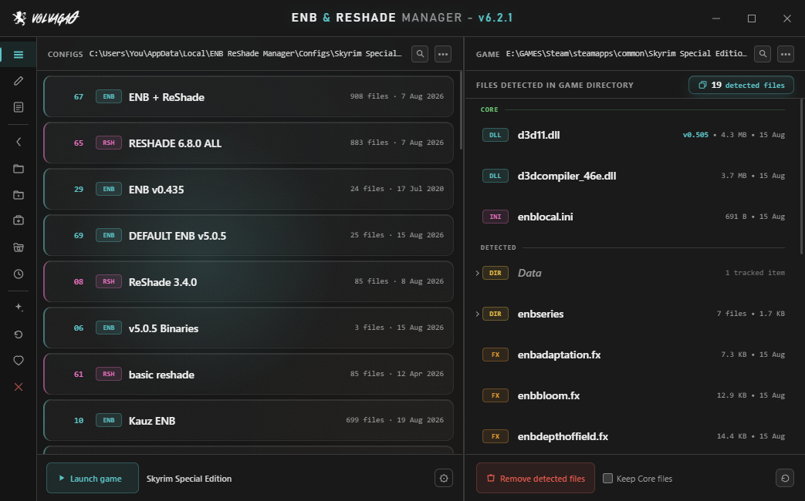
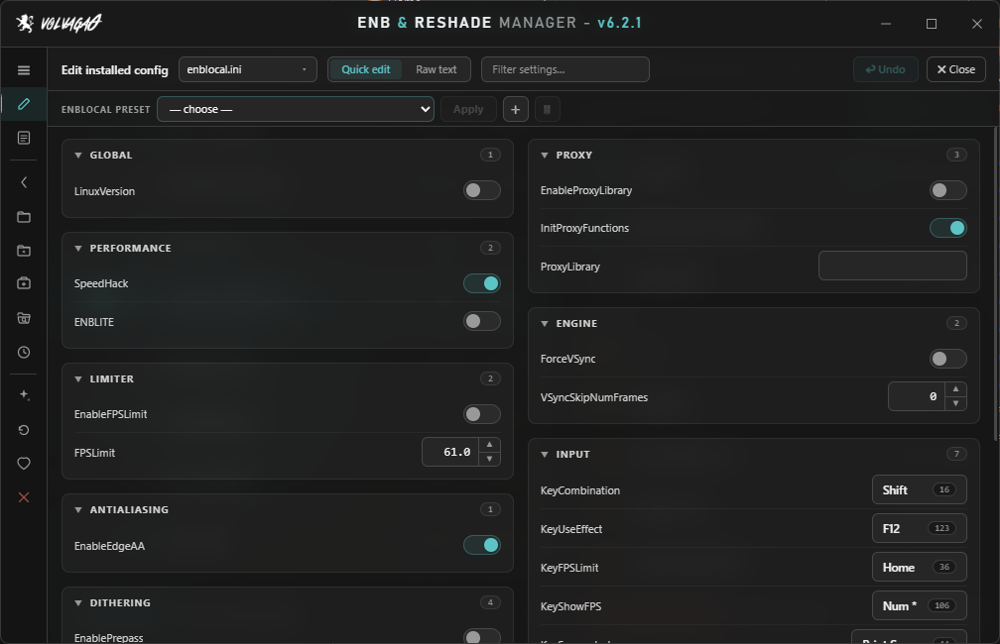
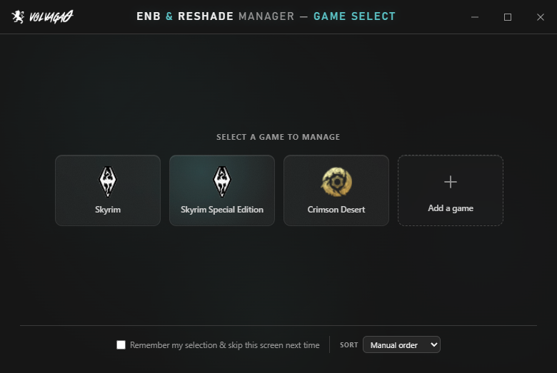

Swap between ENB, ReShade, SweetFX and FXAA setups without copying a single file by hand.

The problem
Every graphics preset you install drops a pile of loose files into your game folder — a wrapper DLL, an enbseries folder, forty-odd .fx files, an enblocal.ini you spent an hour tuning. Trying a different preset means pulling all of that back out. Going back to the old one means remembering exactly what "all of that" was.
This app remembers for you. Save your current setup to a slot, load a different one, switch back whenever you like. It only ever touches files it knows about, that list is visible and editable, and it will not go near your saves, your mods, or anything else in the folder.
I wrote the first version in 2016 because I got sick of doing it by hand. It's been in development ever since, and it's past 240,000 unique downloads on Nexus.
Getting started
Config slots
Every tracked file, in the place it sat. Save as many as you want, name them what you want, drag them into whatever order makes sense to you.
Loading a slot replaces what's installed. If you'd rather stack one on top of another — a preset plus a separate shader pack, say — the load prompt offers Merge, which drops the slot's files in without clearing what's already there.
Double-click a slot to load it. Right-click for the rest: open its folder in Explorer, duplicate it, export it as a .zip, overwrite it with your current setup, or delete it. Coloured spines down the side of each card tell you at a glance whether it's ENB, ReShade, SweetFX or FXAA.
Removal
Strip every tracked ENB/ReShade/SweetFX/FXAA file out of the game folder in one go. Handy before installing something new, and handy when a preset misbehaves and you want a clean slate to test against.
Keep Core files leaves the important binaries alone — the wrapper DLL, d3dcompiler_46e.dll, enblocal.ini — so you can clear out a preset's shaders and configs without reinstalling ENB itself afterwards. You decide what counts as core; right-click anything in the list to add or remove it.
Whatever you had before a load or a removal is set aside automatically. Reload previous setup puts it straight back. It has saved me from my own mistakes more than once.
Detected files
The right-hand panel is a live view of your game folder — type, size, last modified, updating as things change on disk. Folders expand in place, so you can dig through enbseries\ or reshade-shaders\Textures\ without leaving the app.
Select several at once with ctrl+click, shift+click or a drag, then right-click for bulk actions. A search box appears once the list is long enough to want one.
Editing
Quick Edit reads your ENB and ReShade configs and gives you real controls for them — sliders, checkboxes, colour swatches, press-a-key boxes for shader hotkeys. It understands ENB's bare r, g, b colour convention, and drops back to a plain text field when a value goes past 1.0 so HDR settings don't get clamped behind your back. Ctrl+Z undoes the last change.
Raw text mode is there for when you'd rather just edit the file, with Ctrl+F search over it. And enblocal.ini and ReShade.ini get their own per-game preset system, so your performance and memory settings survive swapping presets around.

Drag and drop
Drag files or folders from anywhere on your PC onto the detected files panel and they're installed straight into the game folder, structure intact.
Drag files it isn't tracking onto the same panel and their names are added to the list — from then on it can save, load and remove them along with everything else. That's the fix for a preset that ships with unusually named files, and it's a one-time job per preset.
Archives are deliberately refused. Drag a .zip, .rar or .7z — or files straight out of one of those windows — and the app stops and tells you why, rather than dumping a folder's contents loose into your game directory. Extract first, then drop.
Sharing
Export as .zip packages a slot up for sending to someone else, and leaves ENB's redistributable binaries out on purpose — the wrapper DLL, d3dcompiler_46e.dll, enbhost.exe and enbseries.dll. Whoever opens it supplies those from ENBSeries themselves, same as always. enbhelper.dll is included, since that one is a community project meant to be passed around.
Separately, every distinct wrapper version the app sees gets quietly backed up under Saved DLLs. If you ever need an older ENB binary back, or you've lost track of which version a preset wanted, it's one click from being in the game folder again.
Games
Steam installs for these are found automatically:
Anything else, use Add a game and point it at the folder. It isn't fussy about what the game is — if ENB or ReShade run there, this will manage them.

Requirements
| OS | Windows 10 or 11 |
| Runtime | .NET Framework 4.8 — already on any up-to-date Windows 10 or 11 |
| Runtime | Edge WebView2 Runtime — ships with Windows 11 and current Windows 10. The app says so plainly if it's missing. |
| Install | None. One 2.4 MB .exe, run from anywhere. |
| Admin | Not needed, unless your game lives somewhere that needs it — C:\Program Files, say. |
| Your data | Kept in %LocalAppData%\ENB ReShade Manager\Configs\ by default. You're asked on first run and can put it elsewhere. |
FAQ
Some presets ship with custom filenames the app has never seen. Select those files in Explorer and drag them onto the detected files panel — their names get written to the list and they're tracked from then on. One-time job per preset, not something you repeat.
The .exe isn't code-signed — certificates cost more per year than this project brings in. Click More info → Run anyway. If you'd rather not take my word for it, VirusTotal will happily take the file.
To check you got the file I actually uploaded, the SHA-256 of v6.2.1 is 2F535146A7BBC76EF491E7CDB1214BE575D3E2C00688611A32D89A0756F0B119 — Get-FileHash in PowerShell will tell you.
No. It acts only on the filenames in its own list, only inside the game folder you selected. Mods, saves, load order, .esp files and everything else are outside what it looks at.
Yes. Copy the configs folder across and point the app at it. They're ordinary folders full of ordinary files — nothing is in a database or a proprietary format.
There's nothing to install and nothing running in the background. Delete the .exe and it's gone. Uninstall in the sidebar clears the registry entries and remembered paths if you want to be thorough — it doesn't touch your saved configs.
Yes. Every shader in the 6.8.0 set has been put through the Quick Edit parser.
The Nexus Mods page is best — that's where the comment history lives and where I check most often. If the app crashed it writes a log; include that and I'll have a much better chance of fixing it quickly.